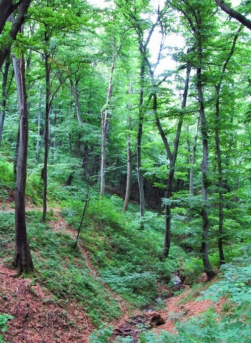

Биљни свет
Данашња вегетација Авале у највећој мери је шумска,док су ливаде сведене на неколико локалитета и мале површине,које,постепено брзо или спорије, обрастају врстама околне шумске вегетације. Вегетацију Авале у највећој мери чине храстове шуме и, знатно мање,предпланинске букове шуме.У зависности од микро рељефа и микро климе ове се шуме међусобно разликују како по структури тако и по облику развијености.Авала представља неку врсту прибежишта у коме су многе биљне врсте терцијера преживеле глацијацију и одржале се до данас.У овим шумама налазимо и до десет врста дрвећа,док су такозване чисте шуме,са једном врстом дрвећа,представљене само делимично и на мањим површинама.На Авали је заступљено пет шумских заједница и то: шума храста медунца и црног јасена,шума сладуна и цера са костриком,шума храста китњака са црним јасеном,шума китњака и граба са костриком,као и брдска букова шума са липом.Шуме Авале граде четири врсте храста(сладун,китњак,медунац,цер),граб,буква,липа,црни јасен,клен,млеч и јавор.Од жбунастих врста најзаступљеније су глог,свиб,дрен и зова,и многе друге.Брдска мезофилна шума полидоминантног типа сачувана је само на три места и то на врло ограниченим површинама,на северној и источној страни авалске купе,на висини од 400 до 450 м.н.в.На мањем делу,у подножју и око Споменика Незнаном јунаку,налазе се вештачки подигнуте шуме белог и црног бора,смрче,дуглазије и осталих алохтоних врста.Ове шуме,парковског типа,подигнуте су током уређења и подизања Споменика Незнаном јунаку.Као што се види ,данашње шуме Авале су делом изданичке,настале као исход природне спонтане обнове шумске вегетације на крчевинама и сечистима,а делом су исход планске садње и уређења , при чему су у природне шуме унете алохтоне четинарске и листопадне врсте дрвећа и жбуња.
Опасност од потпуног уништења шума Авале уочена је и заустављена још половином 19. века,када је 1859. године књаз Милош Обреновић издао наредбу да се Авала ошанчи,копањем шанца око ње, односно огради и њена шума на тај начин спасе од уништења.Радови на нези и подмлађивању шума отпочели су од 1887.године.Законом о шумама из 1891. Авала се уређује као излетничка парк шума,да би 1900. добила своје путеве,када је и урађена шумска основа само за купу Авале,као национални парк ,на површини од 309 хектара од чега под шумом 284.Следеће веће уређење спроведено је после 2. светског рата на основу елабората из 1954.